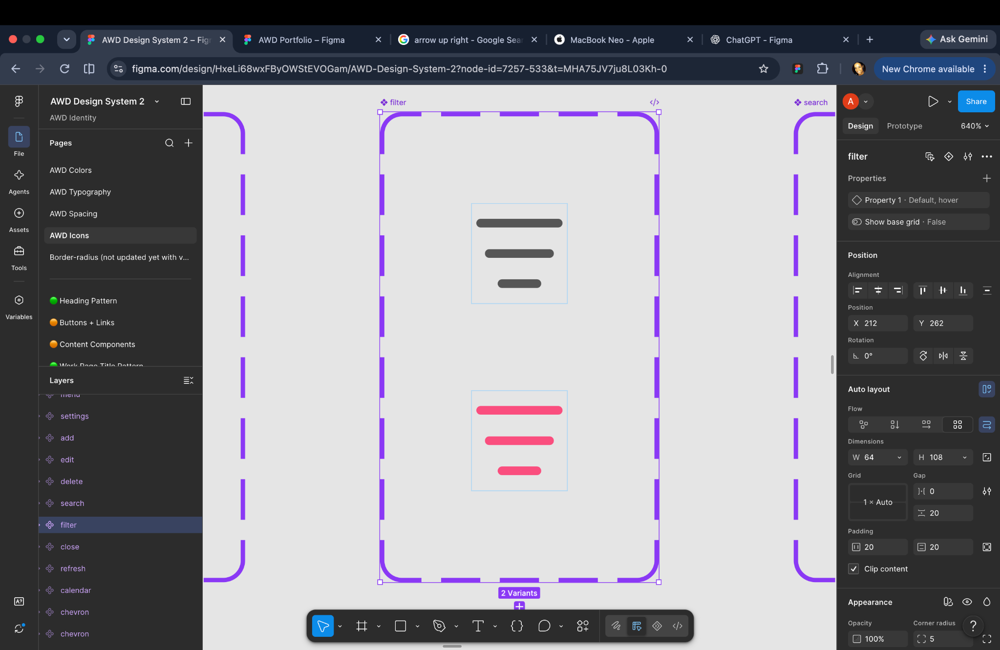
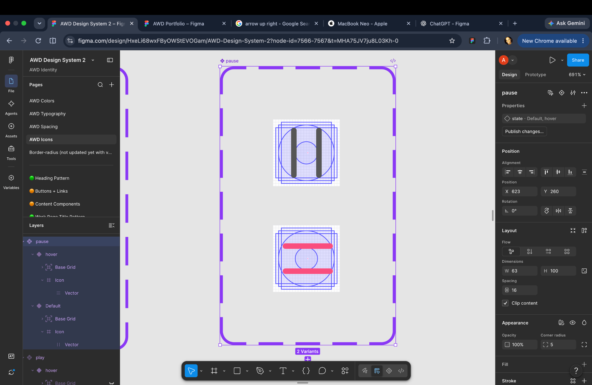
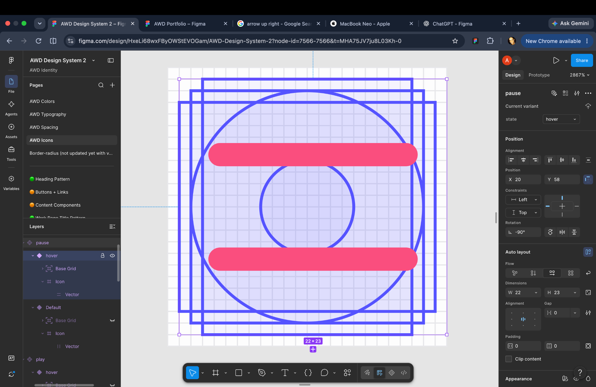
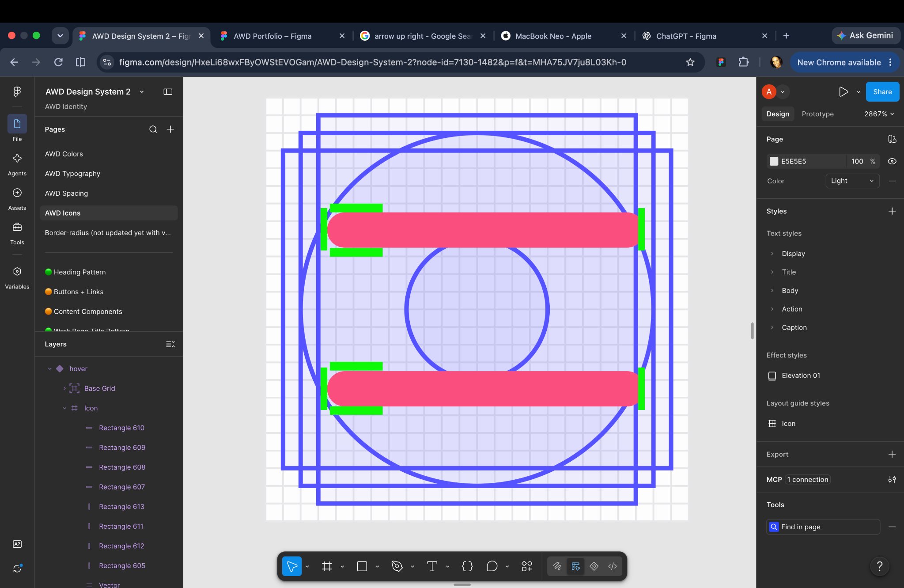
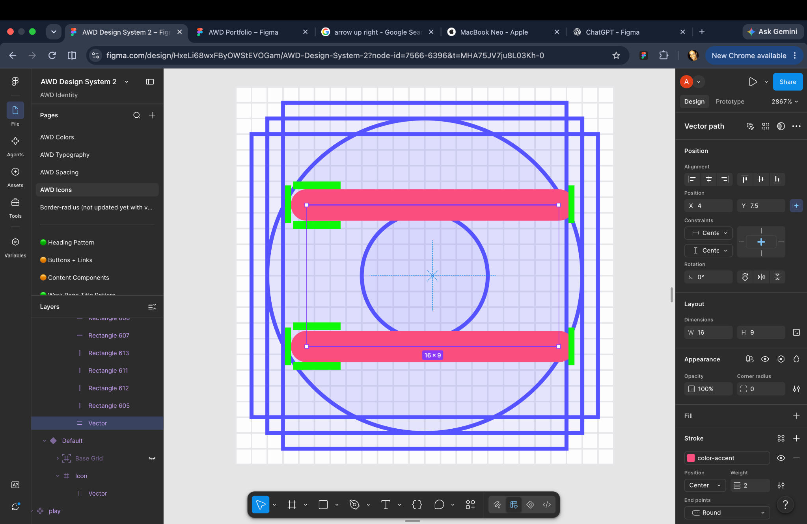
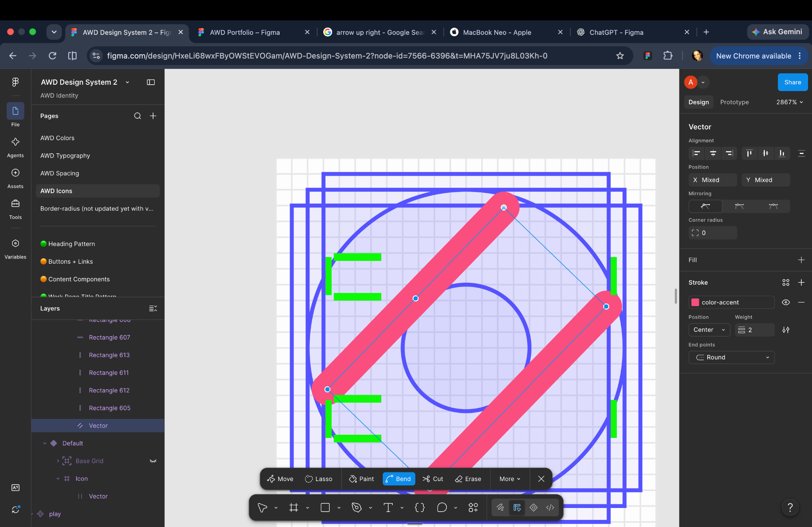
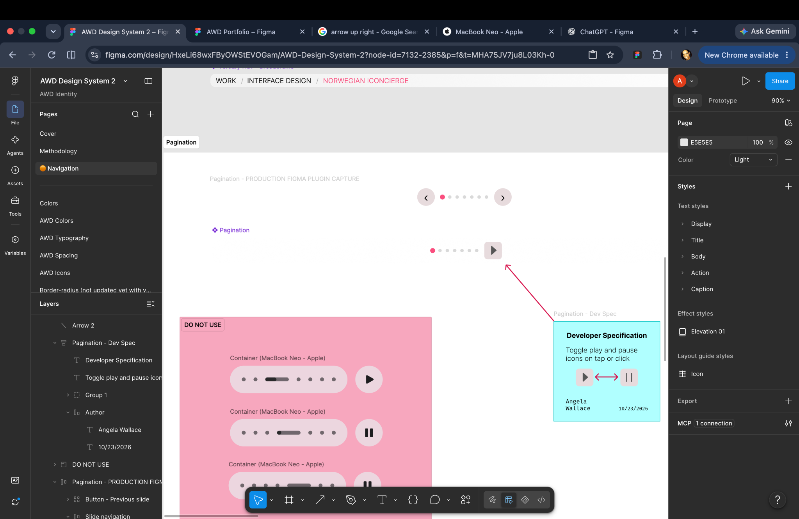
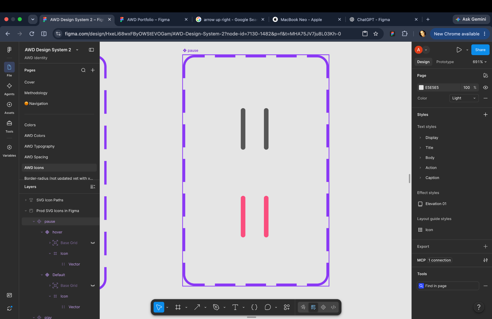
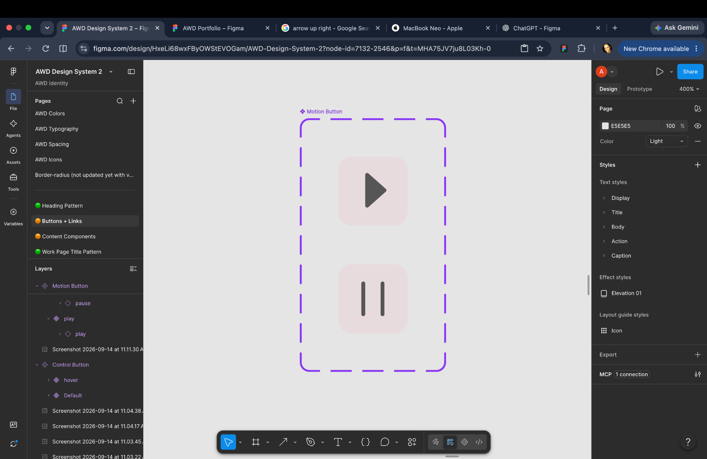

Creating icons
Refined an existing SVG icon in Figma to create a reusable play/pause icon set for the AWD Design System. Using a base grid, I adjusted vector paths, stroke alignment, and rotation to maintain visual consistency across icon states.
Vector Path Refinement
During refinement, I encountered an issue where the icon's visual orientation did not match its rotation property.
To resolve this, I reoriented the vector paths within the icon's viewbox rather than relying on a rotation transform.
This allowed the icon to retain its intended appearance at 0° rotation, establishing a consistent baseline for reuse in nested components.
Solution
- Repurposed existing vector geometry.
- Aligned paths to the icon grid.
- Refined spacing, proportions, and stroke positioning.
- Created Default and Hover variants.




Rotation & Viewbox Alignment
During refinement, I encountered an issue where the icon's visual orientation did not match its rotation property.
To resolve this, I reoriented the vector paths within the icon's viewbox rather than relying on a rotation transform.
SolutionThis allowed the icon to retain its intended appearance at 0° rotation, establishing a consistent baseline for reuse in nested components.


Component Integration
With the icon geometry corrected, I incorporated the play and pause icons into a reusable Motion Control button.
The button uses nested icon components, allowing the icon state to change without rebuilding the surrounding button.
I then updated the existing Pagination ↗ pattern to incorporate the new control, documenting the intended interaction: toggling between play and pause on tap or click.



Outcome
Transformed an existing icon into a reusable component set and integrated it into a larger interface pattern.This exercise demonstrates how precise vector editing, consistent component properties, and nested component architecture support the evolution of a design system without recreating existing UI elements.
Tools: Figma, Vector Editing, Layout Grids, Component Variants, Nested Components
Project: AWD Design System
Date: October 23, 2026